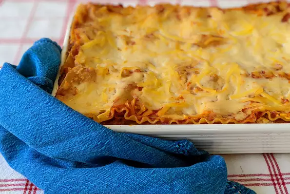

Homemade Lasagna

Description
This is my mom's special homemade lasagna recipe with made from scratch tomato sauce and delicious, cheesy filling. I have found none better anywhere. Serve with a leafy green salad and crusty garlic bread, if desired.
Ingredients
- 1 (16 ounce) package lasagna noodles
- ½ pound ground pork
- ½ pound lean ground beef
- 1 (8 ounce) can tomato sauce
- 1 (28 ounce) can crushed tomatoes
Directions
- Preheat oven to 375 degrees F (190 degrees C). Bring a large pot of lightly salted water to a boil. Add noodles and cook for 8 to 10 minutes or until al dente; drain and set aside.
- Place pork and beef in a large, deep skillet. Cook over medium high heat until evenly brown. Stir in tomato sauce, crushed tomatoes, parsley, garlic, oregano, onion, sugar, basil and salt. Simmer over medium-low heat for 30 minutes, stirring occasionally.
- In a large bowl, combine cottage cheese, eggs, Parmesan cheese, parsley, salt and pepper.